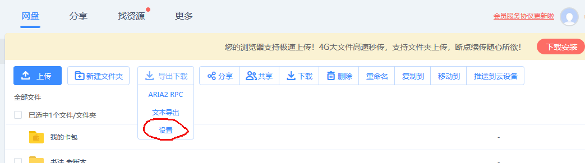

Linux 使用 aria
安装
0. manual: man aria2c
1. emerge net-misc/aria2
2. config file $HOME/.aria2/aria2.conf
配置 $HOME/.aria2/aria2.conf
## 全局设置 ## ============================================================
# 下载位置 , 默认 : 当前启动位置
dir=/data/share/downloads/aria2
# 断点续传
continue=true
# 日志
#log-level=warn
#log=/home/walter/.aria2/aria2.log
# 后台运行
daemon=true
# 从会话文件中读取下载任务
input-file=/PATH/.aria2/aria2.session
# 在 Aria2 退出时保存 ` 错误 / 未完成 ` 的下载任务到会话文件
save-session=/PATH/.aria2/aria2.session
# 定时保存会话 , 0 为退出时才保存 , 需 1.16.1 以上版本 , 默认 :0
save-session-interval=30
# 文件预分配方式 , 能有效降低磁盘碎片 , 默认 :prealloc
# 预分配所需时间 : none < falloc ? trunc < prealloc
# falloc 和 trunc 则需要文件系统和内核支持
# NTFS 建议使用 falloc, EXT3/4 建议 trunc, MAC 下需要注释此项
# file-allocation=none
# 客户端伪装
user-agent=netdisk;5.2.6;PC;PC-Windows;6.2.9200;WindowsBaiduYunGuanJia
referer=http://pan.baidu.com/disk/home
# 禁用 IPv6, 默认 :false
#disable-ipv6=true
# 启用磁盘缓存 , 0 为禁用缓存 , 需 1.16 以上版本 , 默认 :16M
#disk-cache=32M
# 其他
always-resume=true
check-integrity=true
## 下载位置 ## ============================================================
# 最大同时下载任务数 , 运行时可修改 , 默认 :5
max-concurrent-downloads=5
# 同一服务器连接数 , 添加时可指定 , 默认 :1
max-connection-per-server=5
# 最小文件分片大小 , 添加时可指定 , 取值范围 1M -1024M, 默认 :20M
# 假定 size=10M, 文件为 20MiB 则使用两个来源下载 ; 文件为 15MiB 则使用一个来源下载
min-split-size=10M
# 单个任务最大线程数 , 添加时可指定 , 默认 :5
split=5
# 整体下载速度限制 , 运行时可修改 , 默认 :0
#max-overall-download-limit=0
# 单个任务下载速度限制 , 默认 :0
max-download-limit=5M
# 整体上传速度限制 , 运行时可修改 , 默认 :0
#max-overall-upload-limit=0
# 单个任务上传速度限制 , 默认 :0
#max-upload-limit=0
## RPC 设置 ## ============================================================
# 启用 RPC, 默认 :false
enable-rpc=true
# 允许所有来源 , 默认 :false
rpc-allow-origin-all=true
# 允许非外部访问 , 默认 :false
rpc-listen-all=true
# 事件轮询方式 , 取值 :[epoll, kqueue, port, poll, select], 不同系统默认值不同
#event-poll=select
# RPC 监听端口 , 端口被占用时可以修改 , 默认 :6800
rpc-listen-port=6800
## BT/PT 下载相关 ## ============================================================
# 当下载的是一个种子 ( 以 .torrent 结尾 ) 时 , 自动开始 BT 任务 , 默认 :true
#follow-torrent=true
# BT 监听端口 , 当端口被屏蔽时使用 , 默认 :6881-6999
listen-port=51413
# 单个种子最大连接数 , 默认 :55
#bt-max-peers=55
# 打开 DHT 功能 , PT 需要禁用 , 默认 :true
enable-dht=false
# 打开 IPv6 DHT 功能 , PT 需要禁用
#enable-dht6=false
# DHT 网络监听端口 , 默认 :6881-6999
#dht-listen-port=6881-6999
dht-file-path=/opt/var/aria2/dht.dat
dht-file-path6=/opt/var/aria2/dht6.dat
# 本地节点查找 , PT 需要禁用 , 默认 :false
#bt-enable-lpd=false
# 种子交换 , PT 需要禁用 , 默认 :true
enable-peer-exchange=false
# 每个种子限速 , 对少种的 PT 很有用 , 默认 :50K
#bt-request-peer-speed-limit=50K
# 设置 peer id 前缀
peer-id-prefix=-TR2770-
# 当种子的分享率达到这个数时 , 自动停止做种 , 0 为一直做种 , 默认 :1.0
seed-ratio=0
# 强制保存会话 , 即使任务已经完成 , 默认 :false
# 较新的版本开启后会在任务完成后依然保留 .aria2 文件
#force-save=false
# BT 校验相关 , 默认 :true
#bt-hash-check-seed=true
# 继续之前的 BT 任务时 , 无需再次校验 , 默认 :false
bt-seed-unverified=true
# 保存磁力链接元数据为种子文件 (.torrent 文件 ), 默认 :false
bt-save-metadata=true
bt-max-open-files=16
基于 Firefox 前端 Aria2 Download Manager Integration 管理器
百度网盘使用 aria2
在浏览器中安装 BaiduExporter 插件 , 可以提交百度网盘下载任务

-
设置

-
选中需要下载的文件